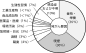

2023年
問題27 ヒトのがんに関する次の記述のうち，最も不適当なものはどれか．
（1）ヒトのがんの3分の2以上は，食事や喫煙等の生活習慣が原因とされる．
（2）がんは我が国の死因のトップであり，高齢化に伴い死亡者数が増え続けている．
（3）プロモータはDNAに最初に傷を付け，変異を起こさせる物質である．
（4）ウイルスが発がんの原因となることがある．
（5）ホルムアルデヒドには発がん性が認められる．
2023年
問題27 正解（3） 頻出度AAA
最初に遺伝子DNAに傷をつけて変異を起こさせる物質はイニシエータ（initiator：創始者，発起人，起爆剤などの意）という．
プロモータ（promoter：興行主，促進者）は細胞の増殖を促進したり，活性酸素を増大させてがん化を促進する物質など．
-(1) ヒトの発がん要因（2023-27-1図）．

出典 公益財団法人日本建築衛生管理教育センター
「新建築物の環境衛生管理第2版第1刷」中巻52頁 図4-3-3(2)
-(4) ウイルスが発がんの原因の例：B 型や C 型の肝炎ウイルスによる肝がん，ヒトパピローマウイルス（HPV）による子宮頸がんなど多数．